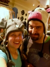
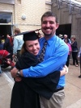

Like any classic collegiate romance story, we met in math class. Math is Natalie's least favorite subject, so she was glad to get Cory's help on the homework (she may have failed the class without him). As time went on, we spent less time doing homework and more time laughing and talking in the extremely romantic Gates Computer Science Building on CMU's campus. It's hard not to fall in love when surrounded by the sound of clicking computer keyboards and the smell of burnt coffee!
We started dating after a night spent stargazing and walking aimlessly around Pittsburgh. But the adventure had only begun! Two days before, Natalie decided to spend a semester in Doha, Qatar. The next four months were filled with emails, skype dates, and letters sent back and forth from across the world. We learned a lot about God's faithfulness during this time, as He held us together and grew our love for different people and cultures.
 The following summer, we both landed internships in the foggy paradise of San Francisco, CA! Little did we know that this is where we would call home after our marriage. We hiked, biked, explored, and found a family at Dolores Park Church in the city.
In Natalie's senior year and Cory's junior year, we pushed through more hard courses and started to learn how to live life together, caring for each other during late homework nights and busy schedules. We learned a lot about God's extreme love for us and for all people at the Urbana Student Missions Conference that winter, where we began to see how our relationship could be used to bring the love of Jesus to others, both domestically and abroad. Throughout a long and difficult semester, we learned much about God's love and grace as we sought to show it in our own relationship. At the end, we celebrated Natalie's graduation from Carnegie Mellon in the spring! 
This summer, Cory worked again in San Francisco and Natalie came to find an apartment after getting a job south of the city. During the flurry of move-in, Cory came up to treat Natalie to a housewarming celebratory dinner. Afterward, we walked to the top of nearby Bernal Hill. It's beautiful up there, and on a clear day you can see the entirety of San Francisco from the top. It's one of our favorite places in the world...and it's where Cory proposed!
Cory graduates in December, and we're preparing and getting extremely excited in the meantime! We give many thanks to those who loved and counseled us along the way to our marriage! We can't wait to celebrate with you :)